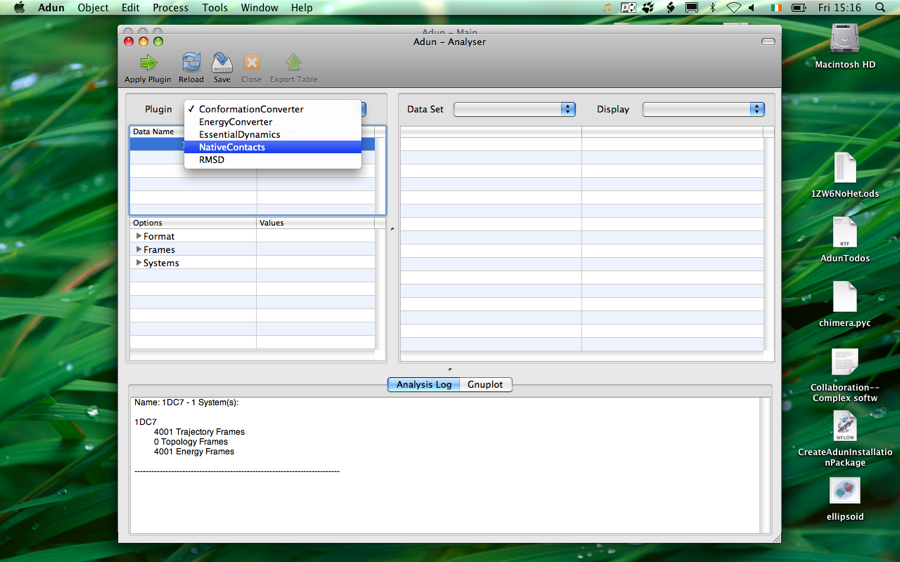

About Plugins
Plugins are small programs that extend Adun by providing new features. They come in three types, Configuration, Analysis and Controller.
Configuration plugins extend the capabilities of the system builder - they usually pre-process the molecular structures input to the builder in some way before the system is created. An example is the AddHyrogens plugins.
Analysis plugins add extra analysis capabilities to Adun's Analyser. There are already many of these to choose from for example EssentialDynamics. Analysis plugins can either operate on one specific type of Adun data, like Simulations, or take multiple different Adun objects as input.
Controller plugins enhance the abilities of Adun's core simulator. By default when a simulation is run it just creates a basic molecular dynamics trajectory. Controllers represent higher level protocols which use molecular dynamics trajectories to gain insight into physical process or to calculate quantities like free-energies. For example a Controller could calculate the free-energy for ligand binding.
